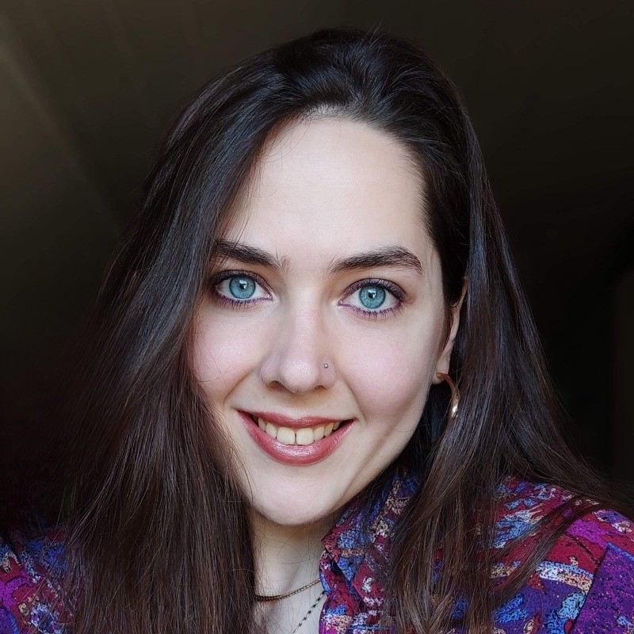

Augmenting Agentic RAG for Complex, Multimodal Documents
Industrial PhD researcher, STMicroelectronics and Télécom Paris, LTCI. Grenoble and Paris, 2025-2028.
Industrial PhD researcher in AI · poet · translator
I work where language meets machines: building agentic RAG systems for complex technical documents, writing poems and prose across languages, and turning AI misconceptions into clear stories for curious non-specialists.
About

I am an Industrial PhD researcher at STMicroelectronics and Télécom Paris, working on LLMs, retrieval-augmented generation, agentic workflows, and multimodal technical documentation. Before AI, I studied languages and literature; that background still shapes how I think about models, evidence, meaning, and audience.
My creative work moves mostly through Serbian, with poems translated into English, French, German, Polish, Hungarian, Italian, and Hindi. The same curiosity now drives a public-facing AI book: a clear, literary, non-hysterical guide to what AI systems are, what they are not, and why the difference matters.
Research
My PhD focuses on augmenting agentic RAG for complex, multimodal documents, with applied work in semiconductor technical documentation and broader research across LLM evaluation, memory, and natural-language interfaces.
Industrial PhD researcher, STMicroelectronics and Télécom Paris, LTCI. Grenoble and Paris, 2025-2028.
Automating error analysis in natural language generation. 1st MME Workshop, 2026.
A comparative study of memory design for LLM-based multi-agent assistants. WOA, 2026.
A survey on multimodal agentic retrieval-augmented generation, currently under review.
Writing
My literary work has appeared through books, festivals, translations, awards, and residencies across the ex-Yugoslav region and Europe. The Serbian original matters; so does the travel of a poem into another language, another mouth, another room.
Knocking on the Tower Door, Zaprokul, Belgrade, 2020. Winner of the “Novica Tadić” Award.
Jesus Among Breasts, LOM, Belgrade, 2020.
Poems by Jasmina Holbus, translated by Vladana Perlić. Al Manar, France, 2016.
Q21, Vienna, 2022.
Public science
I am developing a general-audience book about misconceptions in AI: not a hype pamphlet, not a panic pamphlet, but a lucid guide to what these systems can do, where language misleads us, and how ordinary people can ask better questions about them.
The website is set up to host draft excerpts for readers, editors, researchers, educators, and publishing people interested in an English-language home for the project.
A public draft from the AI misconceptions manuscript can live here as soon as the text is ready to publish.
Prepared for textA second excerpt can target a different misconception, creating a clearer path for editors and new readers.
Prepared for textA shorter non-fiction format for talks, newsletters, interviews, or reflections that connect research to culture.
Ready to expandReading room
This library is organized for the site’s next stage: published papers, poetry in original and translation, short stories, interviews, and public AI essays can be added without changing the structure.
Automating error analysis in natural language generation. 1st MME Workshop, 2026.
A comparative study presented at WOA, 2026.
Selected poems from the award-winning debut collection can be excerpted here in Serbian and translation.
A future home for selected poems, notes, and translations from the 2020 collection published by LOM.
A dedicated shelf for short stories, hybrid prose, interviews, and literary fragments.
Draft chapters and shorter essays for readers who want clarity without surrendering imagination.
Contact
Reach out about AI and NLP collaborations, public science work, poetry events, interviews, or the AI misconceptions manuscript.
Télécom Paris, Institut Polytechnique de Paris, and STMicroelectronics.
Université Grenoble Alpes, Industries de la langue.
Belgrade publishers Zaprokul and LOM.